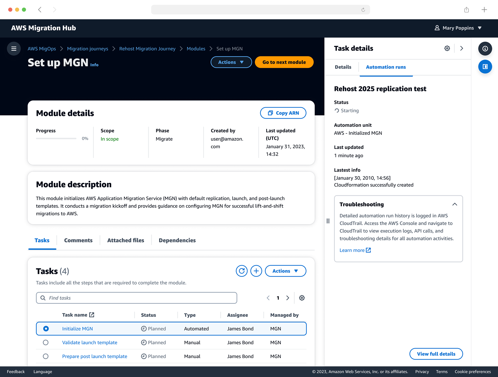

Automation · Enterprise
Automating enterprise application migration at scale

A platform giving migration customers, partners and AWS practitioners one place to discover, run and track the automation that migration projects repeat over and over.
Customers need a streamlined experience that co-locates the data they need and automates the repetitive work around it.
I ran a longitudinal survey with 60 practitioners across the full migration lifecycle, mapping jobs-to-be-done through Discover, Plan, Execute and Observe. Follow-up interviews surfaced the two structural problems: siloed tooling, and access management that blocked people from the work they owned.
Outcome
Migration timelines fell 60% on average, with teams reporting higher confidence in automated processes. The clearest lesson was how much progressive disclosure matters when an operation is complex and irreversible.